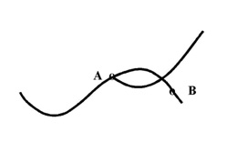

|
Quality trustees from a trusted source
178 Sales and Marketing professionals
312 people from the Financial Services Industry and City
397 from the Home Counties
181 from the North of England
206 people from Central and Local Government
94 from the South West
122 HR professionals
539 people from the Civil Society sector
214 from the Midlands and East Anglia
84 Fundraisers
471 from London
|
 |
By Ian Joseph Practice Head - Charities and Not For Profit - Russam GMS
Thoughts on trusteeship and the ubiquitous ‘founder syndrome’
Charles Handy in his seminal work, The Empty Raincoat, explained the sigmoid curve and its implications for organisations. Simply put: all organisations have life cycles which are fairly predictable and which can be expressed as curves. These mathematical curves, which can be applied to many facets of life, show how organisations undergo a period of growth before inevitably reaching a peak and beginning a descent. For any organisation, there is no clear way to gauge how long it will take until the peak is reached but what is critical is to begin a second curve of organisational development at point A, before the peak, and to not wait until disaster is clear to everyone at point B!
The paradox of course is that it takes vision and courage to begin the second curve when the organisation is still in its ascendancy and most people cannot see either the peak or the looming disaster on the other side of the summit! In the context of charity trustees, this requires having progressive, forward thinking trustees who can see the ‘big picture’. Inactive or ineffective board members who are not in tune with the charity’s environment or sense of direction can be the death knell of a charity.
Too many trustee boards are made up of people who lack strategic foresight. It is one thing having the "great and the good" sit on some of our boards but altogether another when one asks "what are they really ‘good’ at’" and "can they bring to the table something that adds value to the charity’s ultimate customer – its beneficiaries"? Whilst it is not vital for all members of a board to be able to see the world the "sigmoid way", at the very least the CEO and Chair need to be adept at seeing the bigger picture and understanding its implications.
Many amazing organisations started because of the vision and passion of remarkable founders. However, founders can in some situations become obstacles to the organisation’s future growth. The chair might be enlightened and strategic, or, as is often the case, stuck in his/her ways and unable to relinquish control. We have all seen it when an ego stymies organisational change and we have unfortunately seen the consequences.
What are the lessons for charities? Well, one key is for boards to be diverse. A diverse group brings to the table varied perspectives. The young for example are often more in touch with current trends than the older generations and can see the second wave. Does it not make sense therefore to have young representation on boards and mix the wisdom of the old with the insight of the young?
Does it not make perfect sense to have past beneficiaries of a service delivery organisation on the board? Who is better placed to comment on the quality of a drug rehabilitation centre than a client who has passed through its doors?
What about an ethnic mix? – an objective perspective and a different cultural slant is priceless. While we are talking about diversity, teams benefit from being hybrids of the private, public and not-for-profit sectors.
I really believe that one of the keys to seeing and catching the new wave at the right time is to value diversity at all levels but especially at board level. In terms of recruitment, when trustees are called on to steward their organisations through the recruitment process it is all too easy to be risk averse and to hire "more of the same" – both to the board and to the executive team. Perhaps though it is just that different person, the younger candidate or the one from the other side of the world, who is able to see the second curve, and who can help save the organisation as together they ride the sigmoid curve!